从登录到会话、文件、知识空间、数据空间、技能、智能体与定时任务
在浏览器中打开系统访问地址，进入登录页。输入用户名和密码后点击“登录”。
登录后默认进入“聊天”。左侧是功能导航，右侧是当前功能的操作区。
| 区域 | 主要功能 |
|---|---|
| 左上角智能体 | 显示当前智能体，点击可切换；括号里的数字表示该账号下共有几个智能体。 |
| 聊天 | 与智能体对话，创建和使用知识空间、数据空间、定时任务。 |
| 知识空间 | 保存可检索的业务资料，支持上传、解析、查询和引用。 |
| 数据空间 | 把 CSV / Excel 变成可查询的数据表，支持智能体分析。 |
| 收件箱 | 查看定时任务结果、系统通知等。 |
| 控制 | 会话、定时任务。 |
| 工作区 | 文件、技能、工具。 |
| 设置 | 智能体管理、词元消耗。 |
“工具”用于查看当前智能体可调用的工具，通常保持默认即可；“词元消耗”用于查看当前账号的模型调用用量。
一个智能体相当于一位“数字同事”，拥有独立的会话、文件工作区、技能和运行配置。点击左上角的智能体下拉框即可切换。
Enter 发送；需要换行时按 Shift + Enter。输入框左侧的回形针用于添加附件，右侧显示当前工作方式（默认、计划等）。输入框支持 / 快捷指令，例如输入 /skills 查看可用技能。
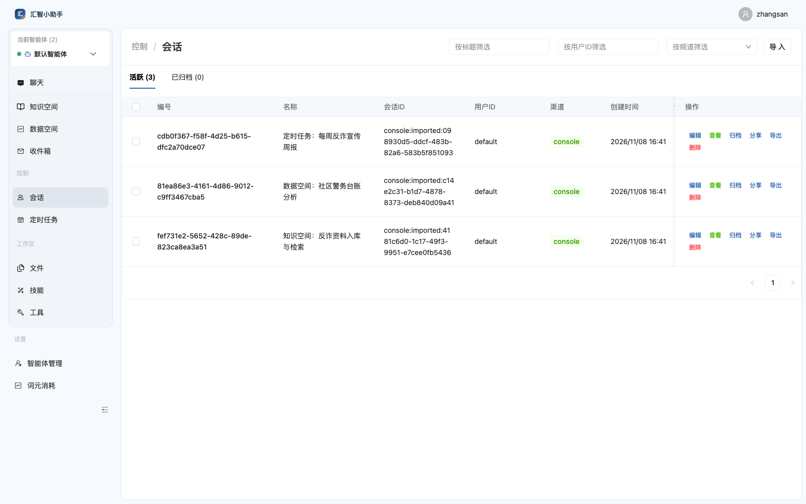
| 操作 | 说明 |
|---|---|
| 重命名 | 在会话列表的“编辑”中修改标题，便于按案件或事项归档。 |
| 归档 | 暂时不用的会话移到“已归档”，不占用日常列表。 |
| 查看 | 打开会话继续对话，历史消息会完整恢复。 |
| 分享 | 把会话快照发送给对方，需对方在审批中确认后接收。 |
| 导出 | 导出为 .session.json，包含会话状态与完整对话记录，可用于备份或迁移。 |
| 导入 | 从导出的文件新建一个会话，不会覆盖原有会话，也不会带入原账号身份。 |
| 删除 | 删除会话及其历史记录；删除前请确认没有需要保留的材料。 |
聊天页右上角有“知识空间”和“数据空间”两个按钮，按钮上的数字表示当前智能体已勾选的路径数量。它们控制同一件事：当前智能体在对话中能读取哪些路径下的资料。
不同类型的知识、不同案件的台账，建议放在不同路径里，并只给对应智能体勾选对应路径：
| 智能体 | 建议只勾选 | 效果 |
|---|---|---|
| 反诈宣传助手 | 反诈宣传知识库 | 只检索反诈口径、案例，不会把社区台账或其他案件内容混进回答。 |
| 台账分析助手 | 社区警务数据空间 | 只查询该数据空间下的表，不会误用其他业务的数据。 |
| 综合研判助手 | 与当前任务直接相关的 2–3 条路径 | 需要跨业务时才同时勾选；任务结束后取消无关路径。 |
这是本系统最常用的“自然语言操作”方式：不需要先到对应页面点按钮，直接在聊天里说明目标即可。智能体会调用相应工具完成创建，并把结果显示在对应页面。
适用场景：手里有一份反复查阅的规范、口径、案例汇编，希望以后能“问一句就找到”，并带出处。
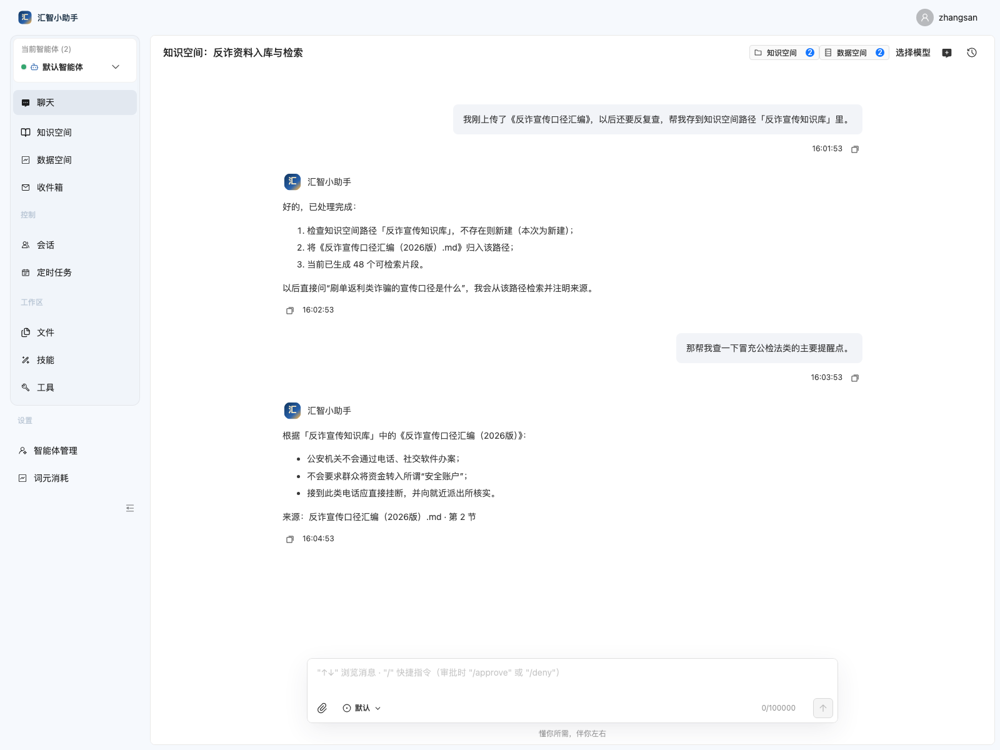
适用场景：拿到一份 CSV / Excel 台账，希望快速统计、筛选、排序，或者让智能体直接给出结论。
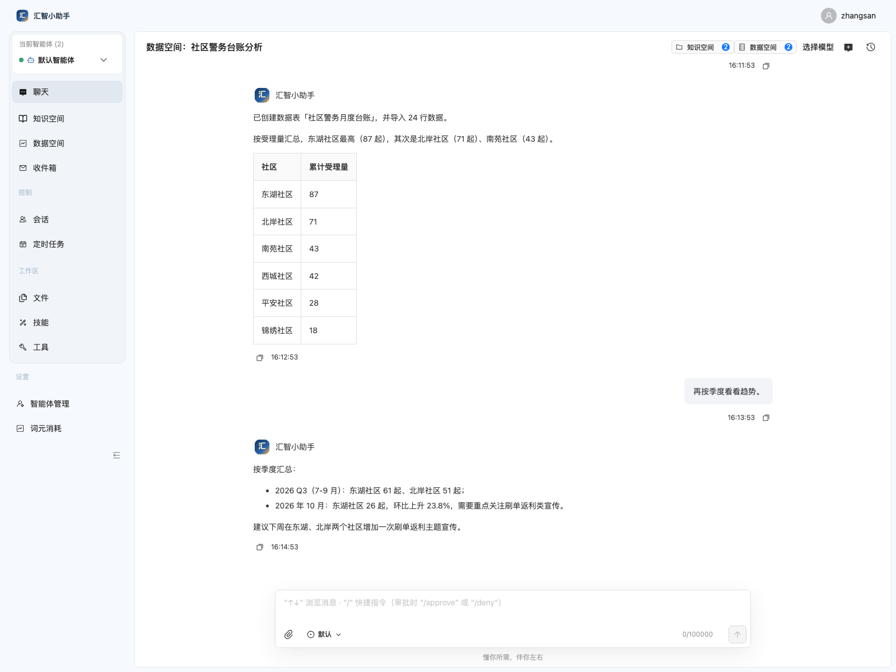
适用场景：每天/每周固定生成日报、周报、台账汇总，或定时检查某些数据。
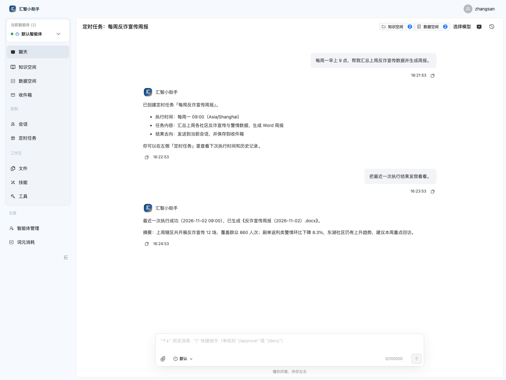
Asia/Shanghai，避免出现“明明设置 9 点却在下午执行”的情况。
“文件”页面左侧是文件树，右侧是预览/编辑区。顶部有“工作区 / 档案 / 日记 / 知识总结”四个来源，日常业务文件主要使用“工作区”。
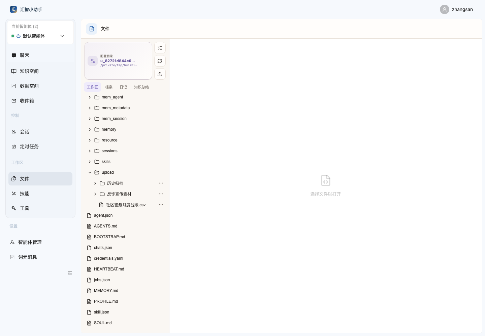
digest、memory、sessions、skills 等）是系统内部目录，不要手动修改或删除。upload，可以看到新文件。upload 下的同名目录；解压成功后原压缩包自动删除。| 项目 | 说明 |
|---|---|
| 单文件上限 | 默认 10GB（由部署参数决定）。 |
| 自动解压格式 | zip、tar、tar.gz、tgz、gz。 |
| 不会自动解压 | 7z、rar 等格式只保存原文件，需要先转换格式。 |
| 解压失败 | 保留原压缩包，并在提示中给出失败原因；可以重新上传或改用其他格式。 |
| 安全限制 | 拒绝路径穿越、符号链接、压缩炸弹；默认最多 20 万个文件、50GB 解压总量。 |
upload 下的文件或目录，右侧出现“⋯”菜单，包含“重命名”和“删除”。upload 下的内容可以管理；系统内部目录不会出现“⋯”菜单，后端也会拒绝越界操作。文件很多时，不需要逐个删除。点击文件树右上角的“多选”按钮（列表图标），进入多选模式。
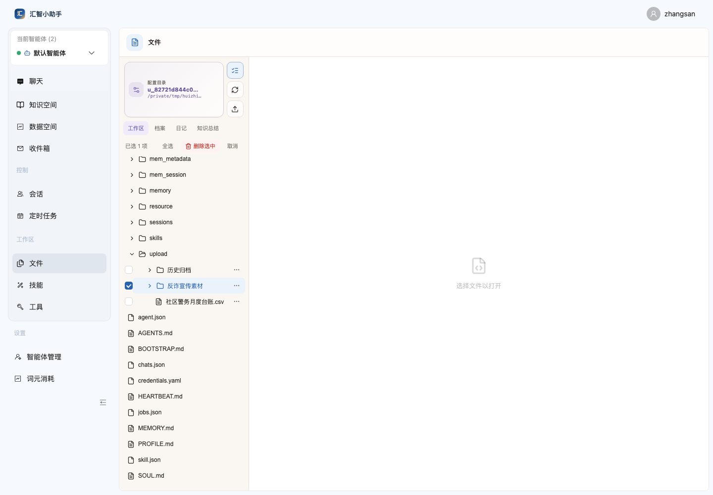
upload 下每个条目左侧出现复选框。知识空间是账号级的“可检索资料库”。和普通文件不同，资料上传后会经过解析、切分和索引，智能体可以先检索相关片段，再基于片段回答问题，并给出文件名、页码或章节等出处。
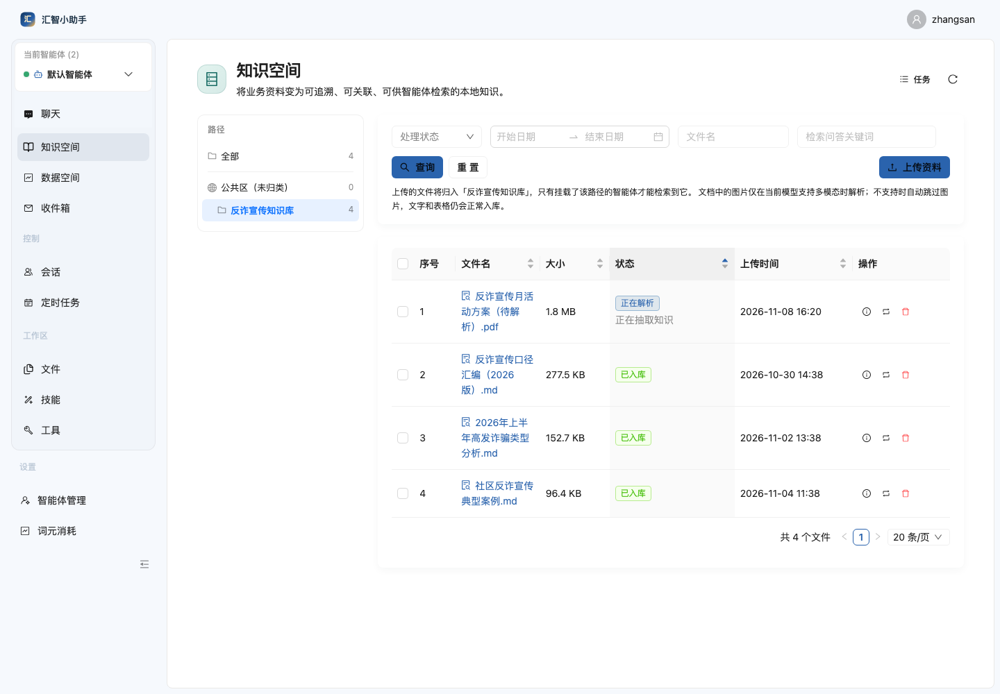
| 状态 | 含义与处理 |
|---|---|
| 正在解析 | 正在抽取文字、切分和建立索引，等待即可。 |
| 已入库 | 可被检索和引用。 |
| 等待重试 | 首次解析失败，系统会在退避时间后自动重试；可查看错误原因。 |
| 解析失败 | 检查文件是否加密、损坏或格式不支持；必要时转换格式后重新上传。 |
除了页面按钮，也可以完全用对话完成。推荐说法：
数据空间把 CSV / Excel 表格变成可查询的数据表。智能体可以用 SQL 做统计、筛选、排序和分组，并把结果解释成业务结论。
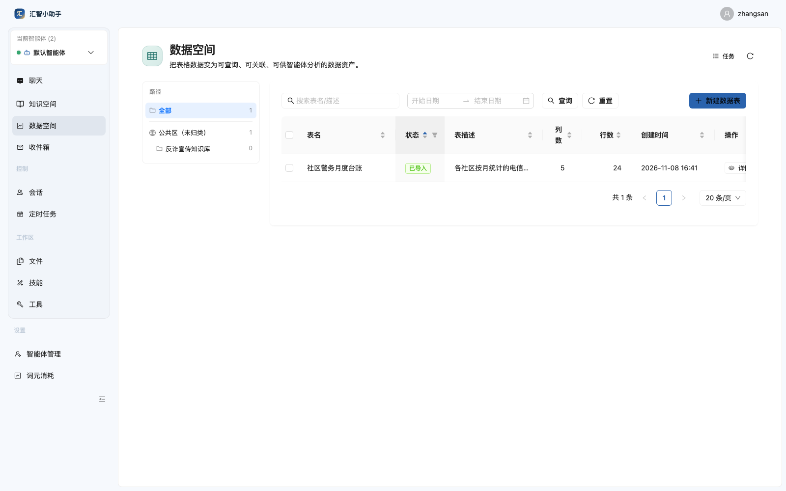
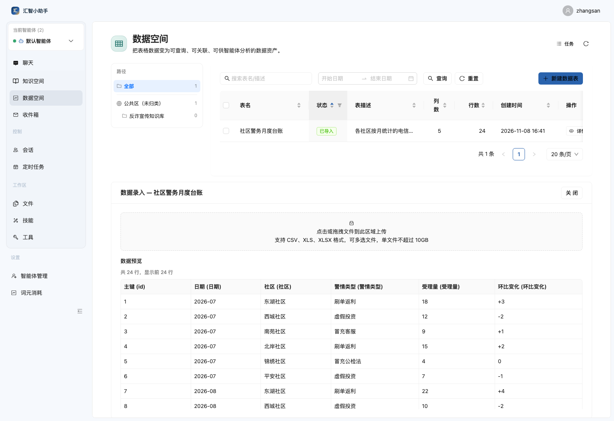
技能是一组可复用的工作方法或工具包，通常包含说明文档、脚本和模板。启用后，智能体在遇到匹配的任务时会自动参考或调用，例如生成 Word 报告、处理 Excel、读取 PDF。
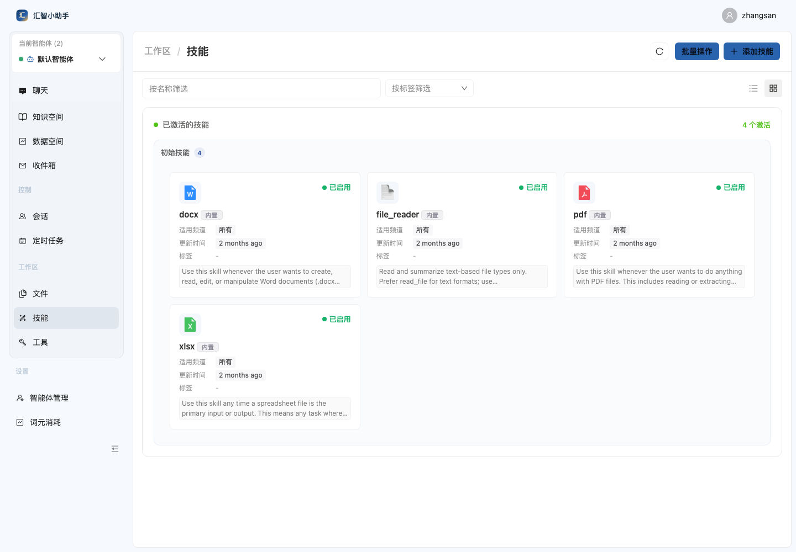
技能可以分享给其他账号，但不会直接写入对方工作区：对方需要在审批中同意后，技能才会复制到自己的技能列表。这样既方便复用，又避免未经确认的技能进入他人环境。
在聊天中可以直接说：“用 docx 技能把这份分析结果生成一份 Word 周报。”智能体会根据已启用技能选择合适的能力。
每个智能体都有独立的：会话列表、文件工作区、技能配置、运行参数和知识/数据访问范围。可以把智能体理解为“带独立资料柜的数字同事”。
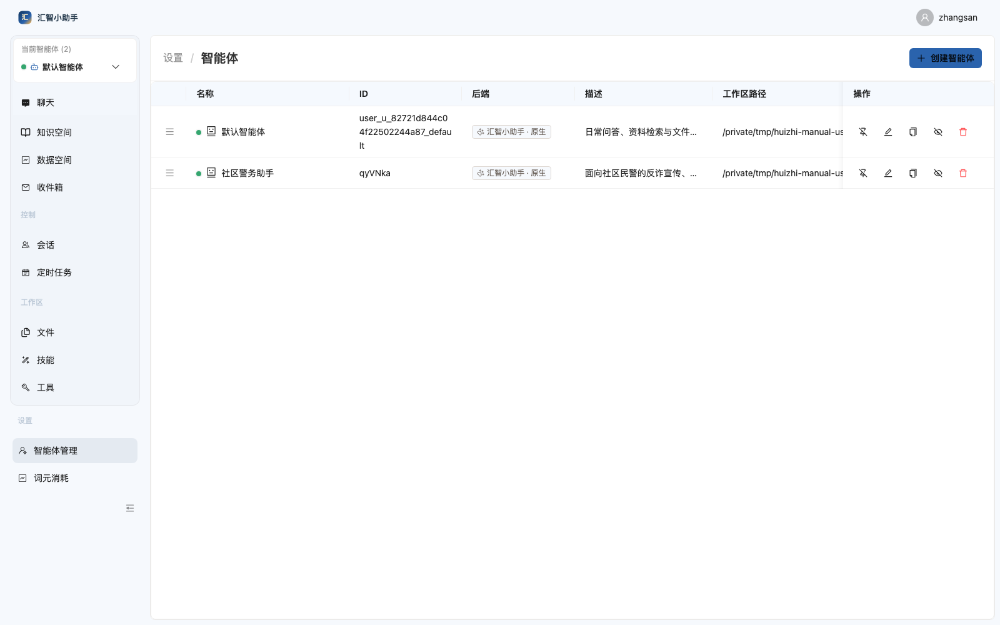
| 配置项 | 作用 |
|---|---|
| 名称 / 描述 | 用于识别智能体；描述也会帮助模型理解自己的职责。 |
| 模型 | 决定推理能力、速度和成本；可用模型由系统统一配置。 |
| 工具 | 决定能否读写文件、执行命令、检索知识、查询数据等。 |
| 技能 | 决定是否具备 Word/Excel/PDF 等专项能力。 |
| 工作目录 | 该智能体的文件根目录；不同智能体互相隔离。 |
点击左上角智能体名称，在下拉框中选择目标智能体。切换后，聊天、文件、技能等页面会自动切换到该智能体的数据。
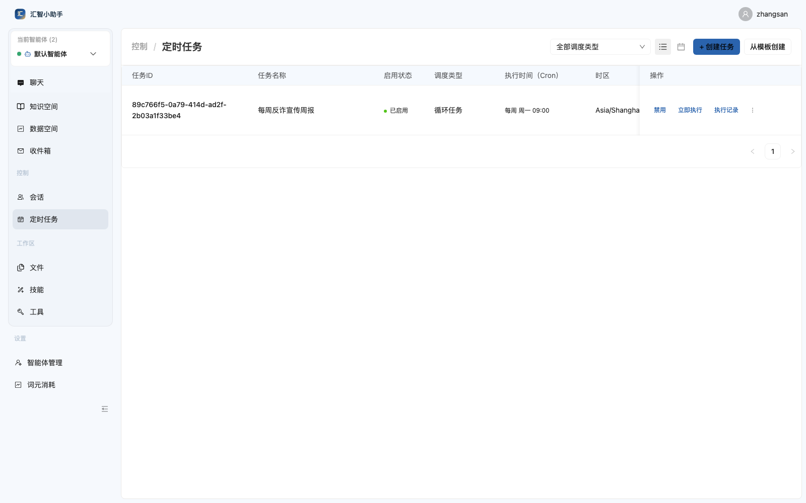
“控制 → 定时任务”用于管理周期性任务。列表显示任务 ID、名称、启用状态、调度类型、执行时间和操作按钮。
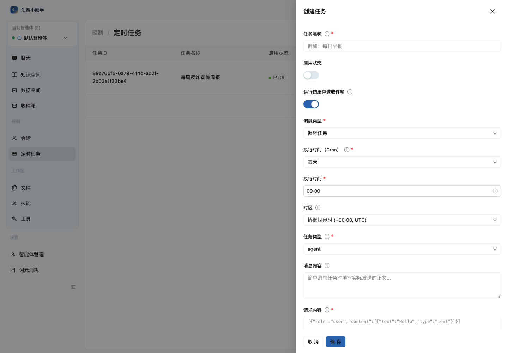
| 字段 | 填写建议 |
|---|---|
| 任务名称 | 用业务语言命名，例如“每周反诈宣传周报”。 |
| 启用状态 | 创建后先关闭，验证内容无误再启用。 |
| 运行结果存进收件箱 | 建议开启，方便事后查看结果和失败原因。 |
| 调度类型 | “循环任务”用于每天/每周/每月；“单次任务”用于指定日期执行一次。 |
| 执行时间 / Cron | 选择预设频率，或直接填写 5 段 Cron 表达式。 |
| 时区 | 选择 Asia/Shanghai，避免时差。 |
| 任务类型 | agent 表示让智能体执行；text 表示只发送固定文本。 |
| 请求内容 | 写清楚要做什么、输出什么格式、结果发给谁。 |
推荐直接用自然语言描述“时间 + 任务 + 结果去向”：
创建后务必到“定时任务”页面核对：任务是否启用、Cron 是否为 0 9 * * mon、时区是否正确、请求内容是否包含输出格式。可以先点“立即执行”验证一次，再等正式调度。
upload 下的内容，系统目录和内部任务文件不可操作。建议按密级拆分账号与智能体：高密级材料使用独立账号/独立智能体，低密级宣传材料另设智能体；知识空间按业务条线命名，避免混用。
| 现象 | 排查方法 |
|---|---|
| 上传后看不到文件 | 确认左上角智能体是否正确；确认页面已切到“工作区”并展开 upload；刷新列表。 |
| 压缩包没有解压 | 确认格式是 zip/tar/tar.gz/tgz/gz；7z/rar 不会自动解压；查看上传提示中的失败原因。 |
| 知识文档一直“正在解析” | 到知识空间“任务”查看队列；确认嵌入模型和 Worker 正常；必要时重新入库。 |
| 数据表显示“待导入” | 需要先上传 CSV/Excel 并完成导入，表结构有了数据才可查询。 |
| 定时任务没有执行 | 检查任务是否启用、Cron 和时区是否正确；查看执行记录中的错误。 |
| 删除后空间没变化 | 大目录删除需要时间；刷新页面查看；系统会复核删除结果。 |
| 智能体说找不到文件 | 确认文件在 upload 下，并在提问中给出相对路径，例如 upload/xxx.csv。 |
| 项目 | 默认值 |
|---|---|
| 聊天附件 | 单个 20MB |
| 文件页单文件上传 | 10GB |
| 单压缩包解压总量 | 50GB、20 万文件、目录深度 32 |
| 数据导入单文件 | 10GB；CSV / XLS / XLSX |
| 知识空间文档格式 | PDF、DOC/DOCX、XLS/XLSX/XLSM、CSV、TXT、MD、JSON |
| 自动解压格式 | zip、tar、tar.gz、tgz、gz |
| 需求 | Cron（5 段） |
|---|---|
| 每天 9:00 | 0 9 * * * |
| 每周一 9:00 | 0 9 * * mon |
| 每周五 18:00 | 0 18 * * fri |
| 每月 1 日 8:00 | 0 8 1 * * |
| 每 2 小时 | 0 */2 * * * |
Cron 顺序为：分钟 小时 日 月 星期。本系统使用 5 段表达式，不支持秒级。
“请在「XX知识库」中查找关于 XX 的规定，列出原文依据并注明来源文件和章节。”
“在「XX数据表」中统计 XX，按 XX 分组，从高到低排序，给出结论和依据。”
“根据以上分析，用 docx 技能生成一份 XX 主题的周报，包含标题、数据摘要、问题分析和下周建议。”
“每周一 9 点，执行 XX，生成 XX 格式，发送到当前会话并保存到收件箱，时区 Asia/Shanghai。”